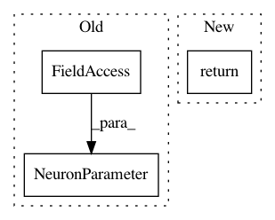

3782cc530a2914543e4f86fc727a9021defc0342,spynnaker/pyNN/models/neuron/neuron_models/neuron_model_leaky_integrate.py,NeuronModelLeakyIntegrate,get_neural_parameters,#NeuronModelLeakyIntegrate#Any#,121
Before Change
// offset current [nA]
// REAL I_offset;
NeuronParameter(self._i_offset, _IF_TYPES.I_OFFSET.data_type)
]
@overrides(AbstractNeuronModel.get_neural_parameter_types)
def get_neural_parameter_types(self):
After Change
self._data.add_list("exp_tc", exp_tc)
names = ["v_init", "v_rest", "r_membrane", "exp_tc", "i_offset"]
return (names, datatypes, self._data)
@overrides(AbstractNeuronModel.get_neural_parameter_types)
def get_neural_parameter_types(self):
return [item.data_type for item in _IF_TYPES]
In pattern: SUPERPATTERN
Frequency: 3
Non-data size: 3
Instances
Project Name: SpiNNakerManchester/sPyNNaker
Commit Name: 3782cc530a2914543e4f86fc727a9021defc0342
Time: 2017-10-30
Author: christian.brenninkmeijer@manchester.ac.uk
File Name: spynnaker/pyNN/models/neuron/neuron_models/neuron_model_leaky_integrate.py
Class Name: NeuronModelLeakyIntegrate
Method Name: get_neural_parameters
Project Name: SpiNNakerManchester/sPyNNaker
Commit Name: 3782cc530a2914543e4f86fc727a9021defc0342
Time: 2017-10-30
Author: christian.brenninkmeijer@manchester.ac.uk
File Name: spynnaker/pyNN/models/neuron/neuron_models/neuron_model_leaky_integrate_and_fire.py
Class Name: NeuronModelLeakyIntegrateAndFire
Method Name: get_neural_parameters
Project Name: SpiNNakerManchester/sPyNNaker
Commit Name: 6e029149bc33f08c01e3d09cea6abd8b811401b0
Time: 2017-12-28
Author: brenninc@cs.man.ac.uk
File Name: spynnaker/pyNN/models/common/spike_recorder.py
Class Name: SpikeRecorder
Method Name: get_global_parameters